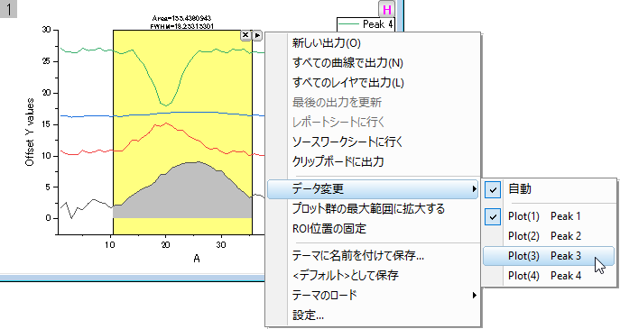
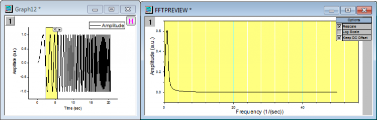

ガジェット
Gadgets-tutorial
このレッスンでは、ガジェットを使用してグラフでデータの探査分析を実行します。
積分ガジェット
- 前回のレッスンで保存したプロジェクトを開き、プロジェクトエクスプローラのルートレベルにガジェットという名前の新しいフォルダを追加します。
- 新しいワークブックを開き、ヘルプ: フォルダを開く: サンプルフォルダを選択して、サンプルフォルダを開きます。このフォルダ内のCurve
FittingサブフォルダにあるMultiple Gaussians.dat ファイルを探します。空のワークシートにファイルをドラッグアンドドロップしてインポートします。
- データセットのロングネームを追加しましょう。列Bのロングネームラベル行に"Peak 1"と入力します。そのロングネームのセルをクリックして選択します。セルの右下角にマウスを移動すると、カーソルが"+"に変わります。マウスを左クリックしながら、列Cから列Eへドラッグします。自動的にロングネームにPeak
2、Peak 3、Peak 4と入力されます。
- 列BからEまでの列ヘッダ上でクリックしてドラッグし、列を選択します。メインメニューから作図: 基本の2Dグラフ：Yオフセット付積上げ折れ線を選択します。
- グラフをアクティブにし、メインメニューから、ガジェット：積分を選択します。
- 設定はデフォルトのままにして、OK ボタンをクリックします。グラフ内に関心領域（Region of Interest
、ROI）ボックスが配置されます。希望のデータ範囲をカバーするように関心領域(ROI)を移動したりサイズを変更したりします。
- 関心領域(ROI)の右上にある三角ボタンをクリックして設定を選択し、ダイアログを再度開きます。
- 出力タブを開き、出力先の項目にある、ワークシートに追加にチェックを付けます。OK
をクリックして、ダイアログを閉じます。
- レイヤに複数のプロットがあるときに、このガジェットはデフォルトではアクティブなデータに対して動作します。今回の場合は、アクティブなプロットはPeak
1です。 例えばPeak 3にデータを変更したいときは、関心領域(ROI)の右上にある三角ボタンをクリックして、コンテキストメニューからデータ変更:
Plot(3): Peak 3を選択します。

- 再び三角ボタンをクリックしてすべての曲線で出力を選択します。すべての曲線に対する積分結果のワークブックが作成されます。三角ボタンをクリックしレポートシートに行くを選択すると出力ワークブックに切り替わります。
- グラフの関心領域(ROI)の右上にあるXボタンをクリックしてガジェットを削除します。
FFT ROIツールガジェット
- 新しいワークブックを開き、Originのプログラムフォルダにある、Samples\Signal Processing\Chirp
Signal.datファイルをインポートします。
- 列Bを選択してメインメニューから作図：基本の2Dグラフ：折れ線を選択して、折れ線グラフを作成します。
- グラフをアクティブにし、メインメニューから、ガジェット：FFT ROIツールを選択します。ダイアログが開いたらデフォルト設定のまま、OKボタンをクリックし、関心領域(ROI)がグラフに配置され、FFTの結果を表示するFFTPREVIEW
という名前の他のグラフが作成されます。
- FFTPREVIEWグラフの右上角にあるLog Scaleのチェックを外します。それから元データの折れ線グラフのウィンドウとFFTPREVIEWのグラフウィンドウを横に並べます。データ曲線の最初の狭い範囲をカバーするように関心領域(ROI)を移動してサイズを変更します。
- 関心領域(ROI)を選択してからキーボードの矢印キーで右側に移動すると、もう1つのグラフでFFTの結果が更新されることが確認できます。

プロジェクトファイルを保存します。